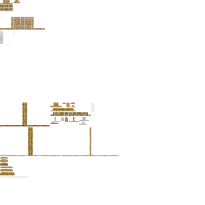

Main事件注册明确绑定BallistaRenderer与BallistaBoltRenderer；modid为aw_vehicles。Renderer分别请求ballista_stand_3.png和arrow_wood.png，不是依据名字猜测纹理。
Main [[18, 38]]；Registry [[30, 45]]；BallistaRenderer [[24, 33], [146, 149]]；BallistaBoltRenderer [[22, 30], [64, 67]]固定提交只读研究；不是Dynasty模型成果，也不是游戏截图。0新增家族/验收信用。
证据 · 来源与阅读范围 · 只读UV检查 · 官方着色器来源 · 文件校验 · 前批归属链
arrow_wood.png
固定提交原图 · 原作者资产仅研究，未复制生产。
ballista_stand_3.png

固定提交原图 · 原作者资产仅研究，未复制生产。
Main事件注册明确绑定BallistaRenderer与BallistaBoltRenderer；modid为aw_vehicles。Renderer分别请求ballista_stand_3.png和arrow_wood.png，不是依据名字猜测纹理。
Main [[18, 38]]；Registry [[30, 45]]；BallistaRenderer [[24, 33], [146, 149]]；BallistaBoltRenderer [[22, 30], [64, 67]]DRAW_PROGRESS、CONSTRUCTION_PROGRESS、IS_BROKEN及箭VELOCITY是SynchedEntityData；set检测变化后标dirty，ServerEntity.packDirty通过SetEntityData包发送，客户端按实体IDassignValues。该链不是几何JSON，也没有保存owner普通引用。
Ballista [[29, 31], [54, 61], [299, 304]]；BallistaBolt [[27, 51], [150, 156]]；SynchedEntityData [[119, 164], [185, 209]]；ServerEntity [[113, 125], [175, 179], [290, 307]]；ClientboundSetEntityDataPacket [[1, 43]]；ClientPacketListener [[498, 505]]ServerEntity维护非默认状态，出生包后可发非默认字段包；持续dirty传输不是每帧所有字段全量同步。客户端找不到包中实体ID时直接跳过该次赋值，真实网络/资源重载顺序尚未运行。
SynchedEntityData [[142, 209]]；ServerEntity [[64, 75], [227, 259], [290, 296]]；ClientPacketListener [[498, 505]]器械客户端在draw<=0时递增clien_ticksAfterShoot，draw>0时归零。Renderer据此做阻尼三角函数后坐力与弦臂角；不是独立服务端射击事件。初始draw==0也满足计数条件，不能把所有可见震动都当真实开火凭证。
Ballista [[144, 182]]；BallistaRenderer [[35, 82]]拉弦使用prev+(current-prev)*partialTick；瞄准角使用current+(current-last)*partialTick，并由客户端tick先做0.3平滑。后者相对last→current属于向前外推；这只是公式差异，不足以宣称实际卡顿或错误。
Ballista [[144, 182]]；BallistaRenderer [[38, 39], [69, 74]]；BallistaBoltRenderer [[43, 51]]施工阈值0–17决定部件可见性；损坏分支覆盖弓臂/绳索姿态，正常分支重设所改的关键偏移旋转，而不是仅换贴图。共享ModelPart并不自动证明串状态；需要核对每个被改字段的正常路径。
BallistaRenderer [[89, 141]]；ModelPart [[56, 70], [109, 129]]ModelPart保存Cuboid六面UV，Polygon用纹理宽高归一化；compile逐顶点输出UV、RGBA、光照与法线。简版render重载传入RGBA=1，当前Renderer没有额外角色色乘数。不能用面平均色预览代替实际PNG采样。
ModelPart [[109, 129], [212, 329]]；VertexConsumer [[17, 59]]；BallistaRenderer [[138, 142]]；BallistaBoltRenderer [[53, 55]]LayerDefinition/PartDefinition把声明宽高传给CubeDefinition与ModelPart。原图与声明均匹配：256×256、192×36。器械模型16单位对应1格；箭还有0.2缩放，80单位轴干约1格，说明不能单看图集大小判断世界像素密度。
LayerDefinition [[1, 24]]；PartDefinition [[35, 47]]；CubeDefinition [[23, 36]]；ModelPart [[153, 160], [279, 294]]；BallistaBoltRenderer [[39, 41], [81, 85], [225, 225]]ModelPart的原色乘数为1不等于最终屏幕颜色不变。entitySolid的vsh读取法线灯光/lightmap/overlay，fsh采样PNG后再乘ColorModulator并施加雾；Renderer也传packedLight。因此离线原色与普通游戏光照应分别验。
EntityRenderer [[33, 43]]；rendertype_entity_solid.vsh [[31, 40]]；rendertype_entity_solid.fsh [[21, 26]]；BallistaRenderer [[138, 142]]entitySolid指定TextureStateShard(texture,false,false)，该状态设置纹理过滤并绑定Sampler0；AbstractTexture在两标志false时选9728最近邻。SimpleTexture从ResourceManager按ResourceLocation读取、加载失败由TextureManager进入缺失纹理后备。当前运行资源包优先级未验证。
RenderType [[39, 42], [192, 194]]；RenderStateShard [[512, 536]]；AbstractTexture [[20, 37]]；SimpleTexture [[28, 59], [83, 104]]；TextureManager [[94, 123]]两张原图大片RGB品红像素的alpha为0。只读UV展开69个Cuboid边界均在图集内；器械没有六面全透明采样，箭headPoint小方块六面采样全透明。entitySolid.fsh没有discard，而cutout.fsh有alpha<0.1丢弃。是否实际可见还涉及完整混合/深度状态，不能仅凭PNG alpha保证隐藏，也不能把整个图集判成缺失纹理。
BallistaBoltRenderer [[73, 79]]；RenderType [[39, 45]]；rendertype_entity_solid.fsh [[1, 26]]；rendertype_entity_cutout.fsh [[21, 30]]；rendertype_entity_solid.json [[1, 8]]箭Renderer在0.2缩放之后再加dx/dy/dz*partialTick局部平移；Dispatcher已先平移到其接收的实体绘制位置。不能由局部几何长度推断服务器命中范围，是否叠加多重插值需继续核对上游位置采样。
BallistaBoltRenderer [[34, 55]]；BallistaBolt [[69, 76], [154, 181]]；EntityRenderDispatcher [[125, 170]]；PoseStack [[21, 51]]注册器械碰撞1×2，箭0.25×0.25；EntityRenderer按实体culling AABB加0.5视锥检查，不按每个模型零件自动重算。较长箭/外扩弓臂在视野边缘的实际裁切仍需运行验证，未扩大任何碰撞。
Registry [[30, 37]]；EntityRenderer [[46, 59]]；BallistaBoltRenderer [[39, 41], [81, 85]]Dispatcher按非玩家实体type取renderer，资源重载时重新createEntityRenderers并post AddLayers；不是每次draw都bake模型。已读代码不能证明当前整合包没有其他注册覆盖或资源包替换。
EntityRenderDispatcher [[92, 100], [358, 363]]；BallistaRenderer [[24, 33]]；BallistaBoltRenderer [[27, 30]]